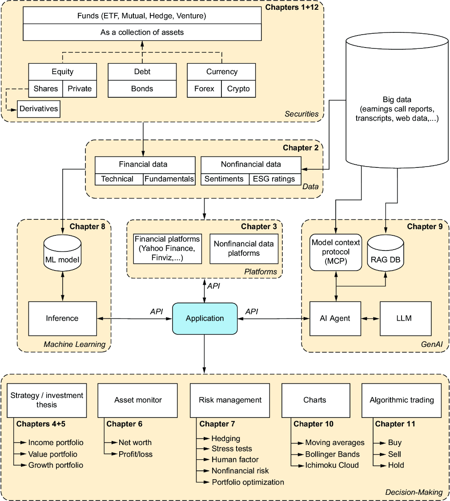
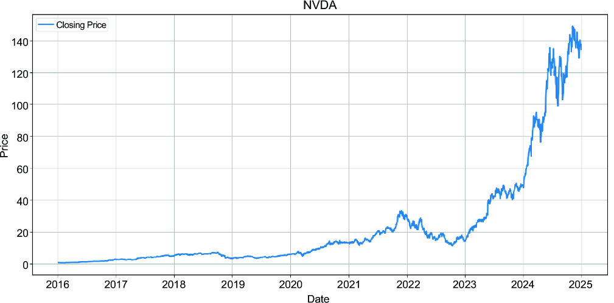
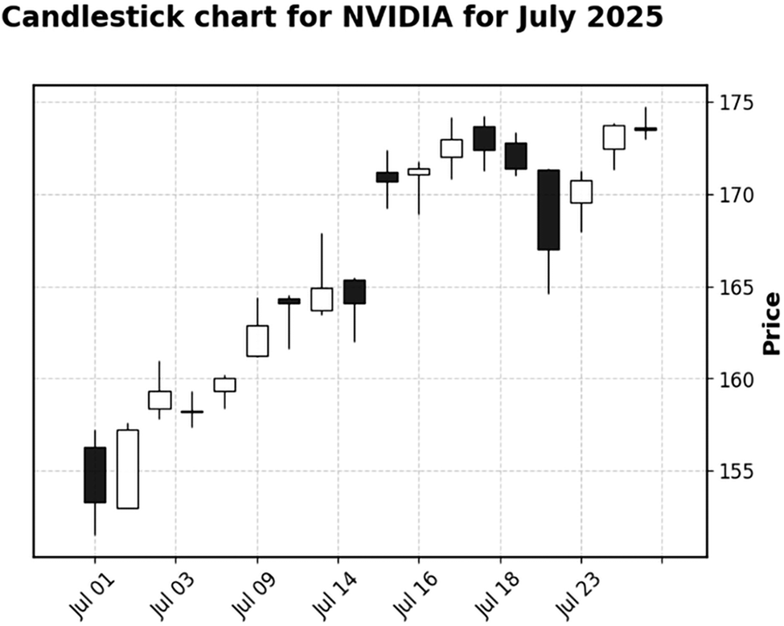
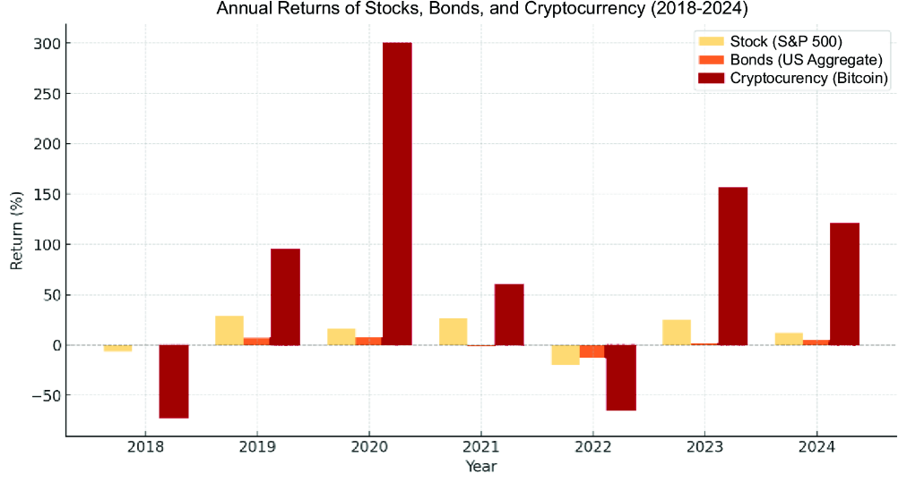

A tough work environment often marks the beginning of the journey to financial independence. Formal education rarely prepares people for the sometimes harsh realities of the workplace: the micromanaging boss, a difficult coworker, a cutthroat culture, or the client who secretly rewrites your code and blames you if things go wrong. At some point, many programmers dream of escaping—maybe as a sheep herder in a remote forest or the captain of a starship in galaxies far, far away.
Finding a new job often proves to be a temporary fix. Starting your own company usually means trading a 40-hour week for an 80-hour one, with less pay and only a slim chance of long-term success. If the start-up fails, you can land right back where you started, only to find that the toxic former colleague who had teased you got promoted and is now your boss.
But what if the solution isn’t another job, but greater independence from any job through gradually building passive income? The timeline to financial freedom varies depending on your circumstances—a family, a mortgage, or even just residing with Her Majesty, the cat—creating a different scenario for everyone. Freedom can begin with the first realization that some of your essential expenses are covered by passive income . . . forever. And if you keep going, the number of things you don’t have to work for to pay for increases. Knowing that you can leave a high-paying, soul-crushing job for a more fulfilling one, even if it pays less, is a powerful relief for a developer who has endured hell on earth.
This book serves as a step-by-step guide to achieving greater independence. It emphasizes rational thinking and patience; no miracles are guaranteed. Be wary of anyone claiming you can get rich in 24 hours. Following such advice often depends on luck, a good lawyer, or both.
Diving into the financial world can feel like stepping onto the road, and if you don’t keep your feet, there’s no knowing where you might be swept off to. To avoid straying off the beaten track, we need to understand the essentials of what we want to explore.
Sooner or later, financial planning becomes a necessity. Perhaps we saw our dream house, met the person we want to start a family with, heard the demands for more comfort from Her Majesty the cat, or wanted to achieve financial independence. Every journey begins the same way. You assess what you already have and explore and optimize your expenses to determine how much surplus money you can accumulate on average each month.
With your carefully estimated monthly surplus, friends might approach you with ideas on how to invest it. Some of your “expert advisors” may try to charm you with stocks and their alleged high returns. The conservative camp prefers bonds instead, reasoning that they offer lower risk. A third group of finance aficionados may suggest that you put everything into an index fund and refrain from thinking about your investments until you need the money.
Risk and return are the pillars of any investment strategy. However, simply estimating potential outcomes under normal market conditions isn’t enough. Without a fundamental understanding of what you’re investing in, it’s unwise to risk your capital based on a casual tip from a friend.
This book aims to guide you toward becoming a data-driven investor. You’ll learn both the basics of investing and, in parallel, how to make smarter decisions based on data, research, rational thinking, and analysis.
To get started with investing, we must understand the basics of assets. In its simplest form, an asset is something we can purchase to monetize. We use the term securities to refer to a group of assets in the financial domain, such as stocks and bonds. In general, assets are monetized in two ways:
Investors should begin by understanding their risk tolerance—the amount of potential loss they can handle without stress—and their financial goals, which outline how much they hope to earn within a specific time frame. A third critical factor, often overlooked in books for professional investors but vital for individuals, is the time required to manage an investment strategy. If monitoring your portfolio consumes time you’d rather spend on other activities, it’s a clear signal that you need to rethink your approach. The more aware you are of your risk appetite, desired returns, and maximum time commitment, the better prepared you are to develop an investment strategy that helps you meet your life goals.
Stock represents ownership, also known as equity. When you buy stocks, you acquire a small part of a company. As of June 2025, Apple has 15,509,763,000 shares outstanding. Purchasing one share of Apple means you own 0.000000006447552% of the company.
Supply and demand affect stock prices. Investors typically buy more shares of successful companies, which causes their share prices to rise. However, a stock’s value depends on more than just its company’s performance. The entire market is also significantly influenced by larger factors, including global politics and economic news.
Some stocks offer income to investors through a small payment per share, known as a dividend. As of June 2025, Apple trades at about $213.55 per share, and the company pays a quarterly dividend of roughly $0.26 per share. These payments result in a dividend yield of approximately 0.49%, representing the return before taxes that an investor gains from dividends relative to the share’s price.
To put this into perspective, we can compare a company’s dividend yield to the yield on a 10-year US Treasury bond, which is often used as a benchmark for a “risk-free” return. As of June 2025, these bonds offer a yield of around 4.3%—considerably higher than Apple’s current dividend payout.
Considering the treasury yield, investing in Apple solely for its dividend income is a poor choice. Because inflation usually exceeds its ~0.5% yield, an investor would lose buying power if they don’t account for potential capital gains from the stock’s growth.
If you’re passionate about identifying companies that can outperform the market, chapter 4 provides all the details you need to build an investment thesis and develop a growth portfolio in a structured way.
A bond is an IOU. When you buy a bond, you lend money (the principal) to an entity, such as a government or a company. In return, you receive periodic interest payments, known as coupons. With few exceptions, bonds have a maturity date—a specific date in the future when the issuer repays your original principal in full.
All bonds are equal, but some are more equal than others. Because many issuers exist, each bond has a different level of risk:
When holding a bond, you can either wait until maturity to receive its full face value or sell it on the open market earlier. Choosing to sell before maturity means the price you receive will be determined by the market, which could result in a gain or a loss on your initial investment.
Note The basic assumption behind considering US government bonds risk-free is the belief that the US government will always honor its debt obligations and won’t default. This convention has become standard practice in finance. However, describing such assets as extremely low risk would be more accurate because, theoretically, even the US government could default.
Chapter 5 discusses how to build dependable passive income, offering a way to cover everyday expenses and boost your financial independence. It emphasizes practical methods, including a detailed comparison of bonds and dividend stocks as primary sources of income.
Savvy investors diversify their risk by not putting all their eggs in one basket. Investment companies help with this by bundling multiple securities into a single fund. Exchange-traded funds (ETFs) are a popular type of investment that trades on an exchange, making them easily accessible for purchase and sale through any online broker.
Buying an ETF is a simple way to diversify your investments. Instead of analyzing and purchasing hundreds of individual stocks, you can hold a small stake in carefully chosen assets with just one transaction. Most ETFs are passively managed, meaning they track a market index automatically, such as the S&P 500. Algorithms are used to rebalance the fund’s holdings, keeping it aligned with its index. In actively managed ETFs, a portfolio manager selects specific investments to buy.
ETFs aren’t free, and ETF issuers charge a small annual management fee (expense ratio). Still, they are highly cost-effective. For an individual, buying all the underlying stocks directly in separate transactions would cost more due to transaction fees. Because ETFs are collections of assets, all sections that discuss the underlying assets also include ETFs.
Other common pooled funds are mutual funds and hedge funds. These funds are described here:
While ETFs and mutual funds target retail investors, hedge funds operate at a different level. They use more aggressive and complex strategies and are only available to accredited investors, which include high-net-worth individuals and institutions that meet specific wealth requirements.
Other funds are outside the scope of this book; however, we explore hedging techniques used by professional hedge funds in chapter 7. Investors can use these techniques to optimize their portfolios.
Beyond owning equity or lending money, investors can also speculate on currency exchange rates in the foreign exchange (forex) market. Every country has its currency, and the value of these currencies fluctuates against each other in pairs (e.g., the EUR/USD). For example, one day, the euro might strengthen against the US dollar, and the next day it might weaken. Forex traders analyze economic indicators and market trends to predict these movements, aiming to make a profit by buying a currency before it appreciates or selling it before it depreciates.
Currency risk is discussed in chapter 7. Additionally, all aspects of technical analysis, as outlined in chapter 10, apply to all assets, including forex.
For many, cryptocurrency is a complex asset class that can be hard to understand. To clarify, it’s essential first to separate the underlying technology from its most well-known application:
The primary value of cryptocurrency lies in its ability to facilitate peer-to-peer transactions without requiring a trusted third party. Unlike traditional financial systems, which rely on intermediaries such as banks, cryptocurrency networks enable direct transfers between individuals.
The technology that secures these networks also presents unique investment opportunities. Chapter 5 explores one such method—staking—which allows you to earn rewards by helping validate transactions. It also offers a vital overview of the common risks and criticisms associated with this volatile asset class.
Think of a derivative as a contract whose value is derived from an underlying asset, such as a stock or a commodity. It establishes rules for future transactions, helping you manage risk or speculate on price movements.
For most investors, options are the most useful derivatives. An option grants you the right, but not the obligation, to buy or sell an asset at a set price before a certain expiration date.
Think of it this way: you pay a small fee (the premium) to get an API key. This key grants you access to a function—either buy() or sell()—that you can execute under specific conditions. If the conditions aren’t met, you let the key expire. Your only loss is the premium you paid.
You can also be on the other side of the transaction and sell (or, as it’s also called, write) options. You receive the premium as income, but you assume an obligation.
Selling a put option means you’re obligated to buy the stock at the strike price if the buyer chooses to exercise it. If the stock drops to zero, you’re still required to buy it at the high strike price, which could lead to a potentially disastrous outcome.
Options are powerful tools, but they’re complex instruments with significant risk. That’s why they are covered in chapter 7, which focuses on risk.
After purchasing shares on an exchange, you become a shareholder of a publicly traded company. One advantage of being publicly traded is that it makes buying shares easy. Investors worldwide can become shareholders within seconds if they are logged in to their brokerage account and decide to buy shares.
Start-ups present the most significant profit potential. They are ideal for investors willing to accept more risk in exchange for the opportunity to achieve wealth more quickly. Because private companies aren’t traded on public stock exchanges, you need to take a different approach:
Chapter 12 examines opportunities to invest in private equity and highlights the main differences between this type of investment and investing in stocks.
Investing involves acquiring assets and monetizing them, either through capital gains or passive income. We might not always recognize every asset as such. For example, a patent can be valued and licensed for royalties, but not everyone considers it part of their assets.
Commodities are raw materials, such as gold, oil, and wheat, that investors can trade. Because their value is linked to real-world supply and demand, their prices often move independently of the stock and bond markets. While investors can gain exposure through futures contracts or ETFs, they should be aware that these markets can be very volatile. This volatility is caused by a variety of complex factors, including geopolitical events, weather conditions, and global economic growth.
Some investors view real estate as a safe investment, but it comes with challenges. For one, it’s a highly illiquid asset, meaning that selling a property can be a slow and tedious process. Additionally, landlords face the risk of difficult tenants who might damage the property or fail to pay rent.
An asset is considered non-fungible if it’s unique and can’t be easily replaced by another identical item. In contrast, fungible assets are interchangeable, which makes them a good starting point for new investors. This interchangeability allows them to be traded easily and efficiently. While you can still make a good living from non-fungible assets, investing in securities simplifies your life for several reasons:
For these reasons, this book concentrates on securities and other assets not included here.
Before you begin exploring which assets to purchase, consider these four questions about your investment goals, and answer them as honestly as possible:
Besides some universal principles of investing, such as investing only in businesses you understand, there is no one-size-fits-all strategy. Still, every investor can find an approach that best suits their expectations and goals. Now that we know the asset types, we can explore further and examine investment strategies that align with our needs.
Having covered the fundamentals of financial assets, we’ll now focus on how to create value from them. We can classify methods of monetizing assets into three main categories:
Let’s explore some strategies that can help us become better traders or investors and, in turn, help us avoid gambling. Figure 1.1 illustrates the entire investment process and highlights all chapters where relevant topics are discussed in detail.

We use financial platforms and publicly available information to collect data on securities. We can generate more insights about the securities using various analytical methods, including machine learning and AI. We can then apply these new insights to our decision-making processes.
Quantitative refers to numbers, counts, and averages that provide information about what is happening. The goal is to gather as much financial data as possible across many companies and compare these “factors” that may influence the future development of share prices. You can analyze a company’s performance from multiple angles. Historical data shows how performance has changed over time. You can compare the current performance of numerous companies.
Thanks to accounting standards, financial data is highly standardized. As we’ll see in this book, nonfinancial data can also be quantifiable and incorporated into investment research.
In chapter 2, we highlight the financial data that could be especially relevant for quantitative analysis, such as revenues, profit margins, and price-to-earnings (P/E) ratios. Quantitative research begins with data collection and aggregation.
In chapter 3, we show how to gather data relevant to investment analysis. We can use Python libraries designed to provide financial data in a structured format. Alternatively, we can also scrape data from websites.
Having quantitative data allows us to use a machine learning algorithm to forecast future price movements based on historical data. Chapter 8 offers a detailed overview of how machine learning models are generated.
Technical analysis involves assessing assets by examining statistical trends from trading activity, such as price changes and volume. Technical analysts use historical price charts and various indicators to identify patterns and forecast potential future price movements. For example, figure 1.2 shows a price chart for NVIDIA, which a technical analyst would analyze to make informed trading decisions.

While a line chart of share price development is one of the easier charts to create, we also have charts that calculate indicators to help with deciding when to buy or sell. In figure 1.3, we present a candlestick chart for NVIDIA for July 2025, which we created using the code introduced in chapter 10.

Qualitative data includes user feedback from a bug report—the context, feelings, and reasons that explain why the issue is happening. The financial aspects involve the strength of that company’s brand, the quality of its management, and the risk of a new competitor disrupting its market.
Some of the qualitative data can also be converted into quantitative data. Think of scraping data from earnings reports, conducting sentiment analysis on the transcripts, and comparing the scores of all earnings calls. A key part of analyzing qualitative data is the use of GenAI and AI agents, as summarized here:
To illustrate these concepts, chapter 4 will examine companies in the autonomous driving field as a case study for growth investing, while chapter 5 will focus on income investment strategies. Both chapters will highlight opportunities for programmers to gather data about various opportunities more efficiently and to develop better methods for creating scorecards for investability.
While an investor focuses on a company’s long-term health and intrinsic value, a trader mainly cares about an asset’s price movement and market conditions. This focus enables traders to employ strategies that are uncommon in traditional investment portfolios. We can divide trading approaches into two main categories:
With this understanding, let’s examine several key categories of trading. These styles are characterized by their time frames, methods, and dependence on technology:
Effective asset management starts with a unified view of all holdings. Chapter 6 lays the groundwork for this by showing how to gather data from multiple brokers and exchanges into a single Google Sheet. We’ll use Python to connect to two global brokers, Interactive Brokers and Alpaca. If you aren’t comfortable connecting directly to brokers, you can use database tables to store their holdings instead.
Building on that, chapters 8 and 9 explore how to use AI-driven algorithms to analyze stock performance and identify market trends. This then leads to chapter 11, which explains the principles of algorithmic trading—techniques that automatically execute trades when specific parameters or factors are met.
A key part of any such strategy is backtesting. Like unit testing in software development, backtesting assesses an algorithm by testing it against historical market data. This process illustrates how the strategy would have performed in the past, offering essential insights into its potential effectiveness before any capital is risked.
We can classify investment styles into three main categories: value, growth, and income investing. These categories sometimes overlap. One approach is called Growth at a Reasonable Price (GARP), which combines value and growth investing. Let’s look at these three types of investing next.
A value investor seeks to identify companies trading below their intrinsic value. These opportunities often arise when the market overreacts to temporary setbacks, negative news, or poor earnings reports, overlooking a company’s long-term potential. To spot these deals, the investor carefully examines financial data, comparing key metrics and ratios to identify genuine undervaluation. Chapter 2 covers the basics of applying value investing.
A growth investor focuses on companies with the potential for rapid expansion, often innovators in emerging sectors such as quantum computing and autonomous driving. Success in these complex fields relies on a key principle popularized by legendary investor Peter Lynch: your personal or professional knowledge of a domain can give you a strong investment advantage.
He famously argued that an amateur with specialized insight can often outperform a professional without it. Chapter 4 is dedicated to this very idea, guiding you on how to use your unique expertise to identify and analyze growth opportunities.
An income investor focuses on assets that provide a consistent stream of passive income. An income portfolio usually includes dividend-paying stocks, bonds that offer regular interest payments, or real estate investment trusts (REITs). Chapter 5 centers on income investments.
Table 1.1 compares these three strategies, enabling readers to identify the approach that best aligns with their risk profile, return goals, and time investment.
|
Attribute
|
Growth investing
|
Value investing
|
Income investing
|
|---|---|---|---|
| Primary goal |
Capital appreciation |
Capital appreciation |
Regular income |
| Investor focus |
Future potential, innovation |
Undervalued “bargains” |
Consistent cash payouts |
| Typical company |
Young, innovative, rapidly expanding |
Mature, stable, temporarily unpopular |
Established, predictable, high cash flow |
| Dividends |
Low or none (profits are reinvested) |
Often pays dividends |
High and stable dividends key |
| Key metrics |
High revenue growth, High P/E |
Low P/E, Low P/B* |
High dividend yield, stable cash flow |
| Risk profile |
High |
Low to moderate |
Low |
| Time horizon |
Long-term |
Medium to long term |
Any, but often for immediate needs |
| * P/E = price-to-earnings; P/B = price-to-booking. |
Many individuals employ a hybrid approach, carefully combining various methods to achieve multiple financial goals. This approach may also include trading strategies in conjunction with the investment strategies mentioned earlier. Often, this blended method takes the form of a “core and satellite” portfolio:
This book will also examine strategies that support investment and trading decisions. Hedging is a risk management tactic used to offset potential losses in an investment. By taking an opposing position in a related asset, an investor can safeguard their portfolio from adverse price movements. Essentially, hedging is akin to buying insurance; it involves a tradeoff where you may sacrifice some potential gains to mitigate the risk of a significant loss. Chapter 7 covers risk management, including hedging strategies.
Figure 1.4 shows the returns of different assets. Should we simply choose the top performers and move forward?

Past results don’t guarantee future outcomes. The market is unpredictable, and no set of tools, techniques, or strategies guarantees success. As explained in chapter 12, start-ups can return much more than other assets, but they are also the riskiest. As of June 2025, Bitcoin is valued at around $118,000. While an investor buying now might benefit if the price increases from this point, they also face a realistic risk that it could drop sharply and lose a significant portion of its value.
Especially in recent years, it has become increasingly clear how fragile the stock market is and how social media can sometimes have a more significant effect on share prices than earnings reports. We’ve often seen the unpredictable actions of public figures causing overnight gains to disappear, only to rebound later.
Warren Buffett once said, “Be fearful when others are greedy, and greedy when others are fearful.” This principle advises caution during a rising bull market, especially when experienced investors begin to warn of underlying risks, such as high federal debt or economic instability. In such times, it’s wise to resist the temptation to invest aggressively.
Forget stereotypes from pop culture and movies. Slick traders don’t run the modern market in boardrooms; it’s a complex system of data, logic, and algorithms. It’s an environment where you, as a programmer, have a natural and powerful advantage. The skills you use every day to build software are the same skills that can create wealth.
Your job is to turn raw data into logical decisions. Whether you’re debugging from a log file or analyzing performance metrics, you follow evidence, not emotion. Investing is the same. A company’s financial statements are just datasets waiting for analysis. Stock charts are patterns waiting to be recognized. While others rely on gut feelings, you can do the following:
Beyond technical skills, your mindset has been prepared for the realities of investing. Here are some mindset traits you can use to your advantage:
As a programmer, you can align your investment strategy with your life choices. Some programmers choose a career that offers a high income, allowing them to retire early with a solid financial plan.
Other programmers might choose workplace flexibility over a fixed location and become part of the growing community of digital nomads. Sometimes, the benefit isn’t more money but lower expenses and taxes.
The key to investment success is understanding your environment and goals. You shape your investment philosophy, just as you would define the specs for a project: How much risk can you handle? How much time will you dedicate? What are your ethical boundaries?
Answering these questions will help you develop a strong, personal strategy you can follow, turning your natural advantages as a programmer into real-world results. Note that this book doesn’t provide financial advice or recommend the purchase of specific assets. It guides you in using your existing analytical skills to analyze securities, ultimately supporting your decision-making process.